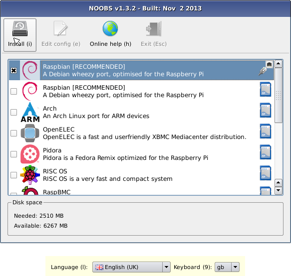
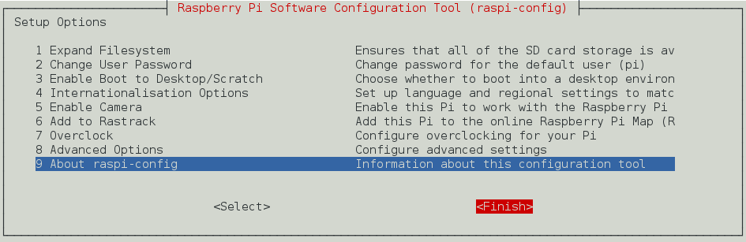

Raspbian을 설치하는 방법은 2가지가 있다.
Raspberry Pi에 설치되는 OS는 Raspbian외에 몇가지가 더 있는데 NOOBS는 이러한 OS를 Package로 묶은 것으로 하나 또는 그 이상의 OS를 한번에 설치할 수 있다. 만약 하나의 OS만 설치하고자 하는 경우에는 Image파일을 이용하여 설치하면 된다. Raspberry 홈페이지에서는 NOOBS를 이용하는 것을 추천함으로 여기에서도 NOOBS를 이용하여 설치를 진행하였다.
Raspbian 설치를 위해 다음 홈페이지에서 NOOBS 파일을 다운 받는다
http://www.raspberrypi.org/downloads/
다운로드한 파일의 압축을 해제한다.
Micro SD Card를 PC에 연결한 후 압축해제한 NOOBS 파일을 전부 복사한다.
PC에서 Micro SD Card를 제거한 후 Raspberry Pi에 연결한다.
Raspberry Pi전원을 연결 하면 NOOBS Install Manager가 나온다.

Raspbian을 선택한 후(2번 째 있는걸 선택) Install 버튼을 눌러 설치를 진행한다.
설치 완료 버튼을 누르면 자동으로 재부팅 된다.
부팅이 완료되면 Raspberry Pi Software Configuration Tool이 나타나는데 Finish를 누른다.

Raspbian의 기본 계정은 ID:pi, Password:raspberry 이다.
Password 변경은 'passwd' 명령을 통해 변경한다.
pi@raspberrypi~$ passwd
네트워크 설정을 위해 /etc/network/interface 파일을 열어 수정한다.
/etc/network/interface
auto lo
auto eth0
iface eth0 inet static
address 10.1.4.207
netmask 255.255.255.0
network 10.1.4.0
broadcast 10.1.4.255
gateway 10.1.4.254
dns-namesrvers 10.1.5.11 10.1.2.240
변경된 설정이 적용되도록 네트워크를 재시작한다.
pi@raspberrypi~$ sudo /etc/init.d/networking restart
이제부터 다음과 같이 ssh로 pi에 접속이 가능 하다.
pi@raspberrypi~$ ssh pi@10.1.4.207